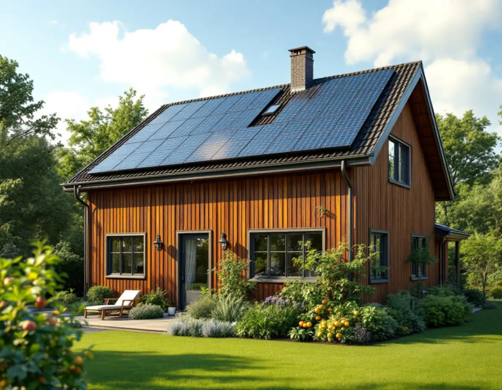
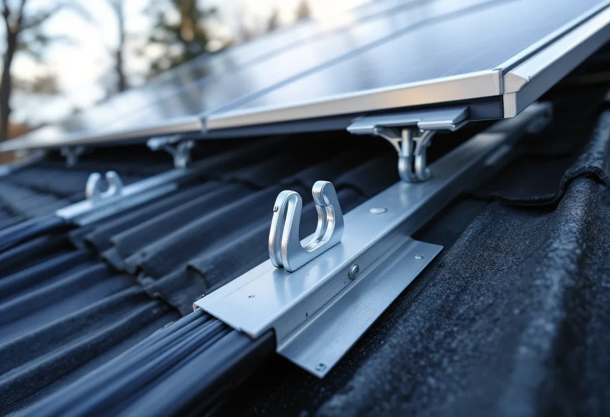

Platsbesök
Taket, takfallen och önskemål om solceller går vi igenom.
Många som byter tak i Spånga vill samtidigt sätta upp solceller. I stora delar av Stockholm krävs då bygglov, och i Solhem kan även taket i sig behöva prövas. Geal Entreprenad AB byter tak på villor och radhus i Spånga och planerar taket så att solcellerna kan komma upp när lovet är klart.

Stockholms stad skriver att du behöver bygglov för solceller på en byggnad inom eller i anslutning till Försvarsmaktens riksintresse i ett område med detaljplan. Därför krävs lov för solceller i stora delar av staden, och en anledning är att området omfattas av riksintresset för väderradarn i Håtuna.
Det betyder att ett takbyte och solceller ofta behöver planeras i två steg: taket kan läggas när det behövs, och solcellerna monteras när bygglovet är klart. Anmälan krävs däremot bara om anläggningen väsentligt påverkar byggnadens bärande delar eller brandskydd, enligt staden.

Boverket förklarar att byte till takintegrerade solceller eller solfångare kan räknas som byte av taktäckningsmaterial, alltså som fasadändring. Paneler som monteras ovanpå ett vanligt tak är en solenergianläggning på byggnaden.
För dig betyder skillnaden mest vid valet: ska taket och solcellerna vara ett och samma ytskikt, eller ska ett vanligt tak läggas med fästen som panelerna kan monteras i senare? Vi förbereder taket för den lösning du väljer, med rätt infästningar och genomföringar för kablar, så att tätskiktet inte behöver brytas upp efteråt.
Stadens strategi för småhusområden räknar Solhem, Bromsten, Flysta och Sundby till villastäderna, och i strategins tabell är Solhem markerat som kulturhistoriskt värdefull miljö. I Solhem fanns från början stora tomter där bara en tiondel av tomten fick bebyggas.
Bromsten, Flysta och Sundby saknar den markeringen i tabellen, men enskilda hus kan ändå vara klassificerade. Stockholms stad påpekar att utökad lovplikt gäller i särskilt kulturhistoriskt värdefulla byggnader och områden. Ligger huset där kan alltså både ett nytt takmaterial och solcellerna kräva lov. Stadsmuseets klassificeringskarta ger en första indikation. Om husen och taken i villastäderna kan du läsa under takrenovering i Spånga.
Staden hänvisar till Stockholms solkarta, där du kan uppskatta hur mycket energi solceller eller solfångare kan ge på din fastighet, och till stadens energi- och klimatrådgivning. Det är ett bra första steg innan du bestämmer om panelerna ska upp på ett visst takfall.
Vid platsbesöket går vi igenom takfallens riktning, skuggor från träd och grannhus och var genomföringar och växelriktare kan placeras. Om tjänsten i stort kan du läsa under takbyte.
Ett fält med solpaneler ger extra last på takstolarna, och infästningarna ska gå i underlaget. Därför ser vi på takstolar, råspont och läkt när det gamla taket är av, och byter skadat trä innan det nya läggs.
Panelerna ska också kunna nås för service, och snö och vatten ska kunna rinna av runt fälten utan att samlas vid infästningarna. Därför planerar vi fältens placering tillsammans med takets plåtdetaljer och hängrännor.
Om du inte vill sätta upp solceller nu kan vi ändå lägga taket så att de går att montera senare. Om stadsdelens hus och vanliga takproblem kan du läsa under takläggare i Spånga.
Taket, takfallen och önskemål om solceller går vi igenom.
Stadsmuseets karta och detaljplanen kontrolleras.
Tak, underlag, plåt och förberedelser för solceller står var för sig.
Ansökan för solcellerna, och för nytt takmaterial när det behövs.
Gammalt tak rivs, underlaget ses över och nytt tak läggs med fästen.
Vi går igenom taket och förberedelserna med dig.
Skatteverket räknar byte och reparation av takpannor, plåttak och hängrännor på ett småhus som rotarbete. För solceller finns också skattereduktion för grön teknik, och Skatteverket påpekar att rotavdrag och grön teknik inte kan ges för samma arbete.
Avdraget är högst 30 procent av arbetskostnaden, högst 50 000 kronor per person och år och högst 75 000 kronor tillsammans med rutavdrag. Material och resor ger inget avdrag. Geal drar avdraget direkt på fakturan.
Takets yta och lutning, materialet, hur mycket underlag som behöver bytas och om taket ska förberedas för solceller. En överblick finns i vad kostar ett takbyte. Efter ett gratis platsbesök får du ett skriftligt kostnadsförslag.
Byte av tegel-, betong- och plåttak.
Takbyte →Takbyte, takbesiktning och plåtarbeten.
Takläggare i Spånga →Solhem, Bromsten, Flysta och Sundby.
Takrenovering i Spånga →Solhem, spåren och de stora tomterna.
Attefallshus i Spånga →Äldre villor, duschplats och bostadsanpassning.
Badrumsrenovering i Spånga →Riva och bygga nytt hus.
Byggföretag i Spånga →Trävillor och gruppbyggda radhus.
Fasadrenovering i Spånga →Villor, verandor och nya öppningar.
Fönsterbyte i Spånga →Villorna i Solhem.
Fönsterrenovering i Spånga →Massivt, lamell, fanér eller laminat.
Golvläggare i Spånga →Breda originalgolv och patina.
Golvslipning i Spånga →Solhem, villastäder och kök i flera lager.
Köksrenovering i Spånga →Solhems färgskala och villorna kring stationen.
Målare i Spånga →Villatak, rännor och stuprör.
Plåtslagare i Spånga →Väggar, vindar och verandor i villastäderna.
Snickare i Spånga →Tapet som passar husets tid.
Tapetsering i Spånga →Villastäderna, stommen och ventilationen.
Totalrenovering i Spånga →